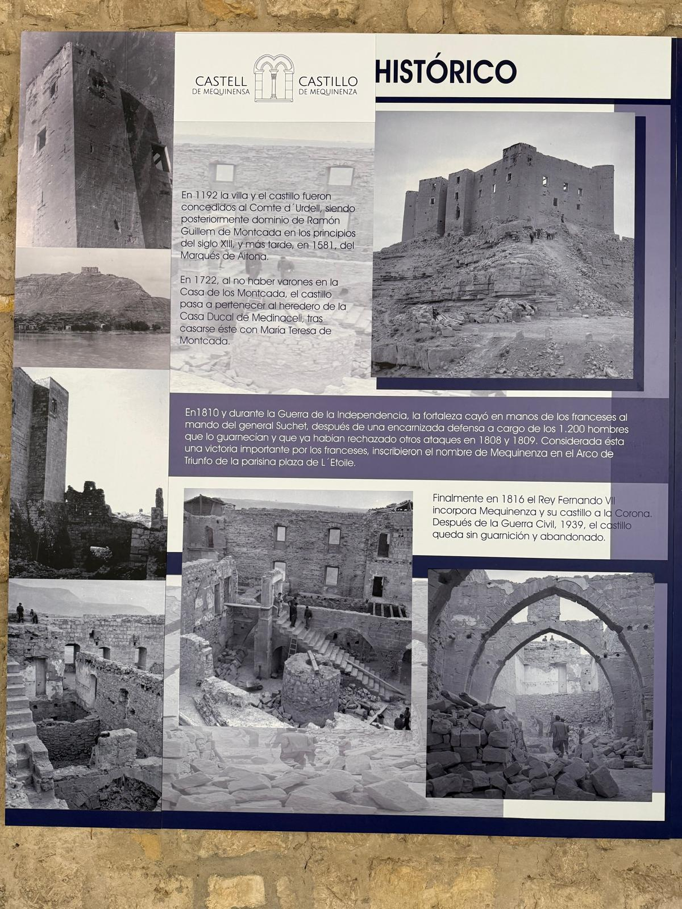
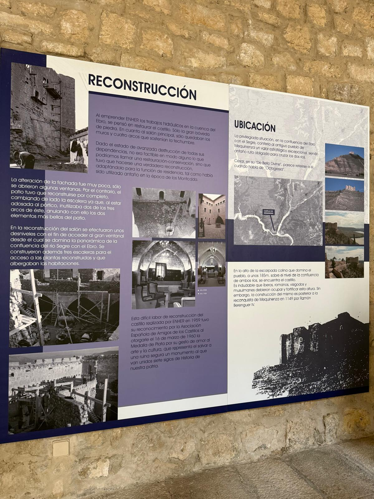

CALLEJERO HISTÓRICO · POBLE VELLCalles empedradas, caserones de piedra caliza y vistas al Castillo de Mequinenza
🏰
Poble Vell de Mequinenza
Reconstrucción Histórica · 1965
🔍
CÁMARA:
🏠
☀️15:10
Colección Fotográfica Histórica de Mequinenza
Archivo fotográfico municipal oficial (mequinenza.com) · Castillo, Poble Vell, minas, Llaüts y vecinos
Paneles Históricos Oficiales del Castillo de Mequinenza
Transcripción íntegra y fotografías en alta resolución de los paneles oficiales de ENHER y el Castillo
🏰 Panel 1: Historia y Defensa del Castillo

1149: Reconquista de Mequinenza por Ramón Berenguer IV.
1192: La villa y el castillo fueron concedidos al Comte d'Urgell, pasando a principios del siglo XIII a dominio de Ramón Guillem de Montcada, y en 1581 al Marqués de Aitona.
1722: Al no haber varones en la Casa de los Montcada, el castillo pasa al heredero de la Casa Ducal de Medinaceli.
1810 (Guerra de la Independencia): La fortaleza cayó en manos francesas al mando del general Suchet tras una encarnizada defensa de los 1.200 soldados que ya habían rechazado ataques en 1808 y 1809. Considerada una victoria mayor, Napoleón inscribió el nombre de MEQUINENZA en el Arco de Triunfo de París.
1816: El Rey Fernando VII incorpora Mequinenza y su castillo a la Corona.
1939: Tras la Guerra Civil, el castillo queda sin guarnición.
🏗️ Panel 2: Reconstrucción ENHER (1959)

Ubicación: Privilegiada situación en la confluencia del Ebro con el Segre ("Octogessa" en el De Bello Civili de Julio César). A 185 m sobre el nivel de los ríos.
Reconstrucción ENHER: Al emprender los trabajos hidráulicos en la cuenca del Ebro, se llevó a cabo una verdadera reconstrucción para residencia histórica, restaurando la gran bóveda de piedra, el salón principal con cuatro arcos góticos y el patio.
Gran Ventanal: En el salón se efectuaron desniveles con el fin de acceder al ventanal desde el cual se domina la panorámica de la confluencia del río Segre con el Ebro.
Medalla de Plata (1960): Otorgada el 16 de marzo de 1960 por la Asociación Española de Amigos de los Castillos por salvar de una ruina segura siete siglos de Historia.